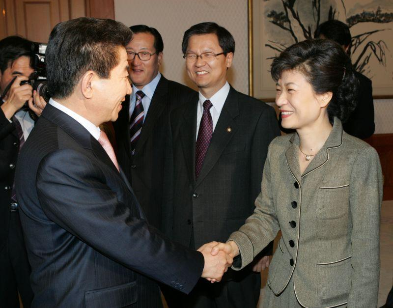
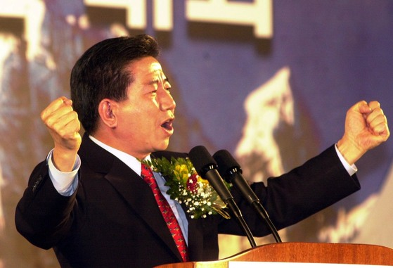
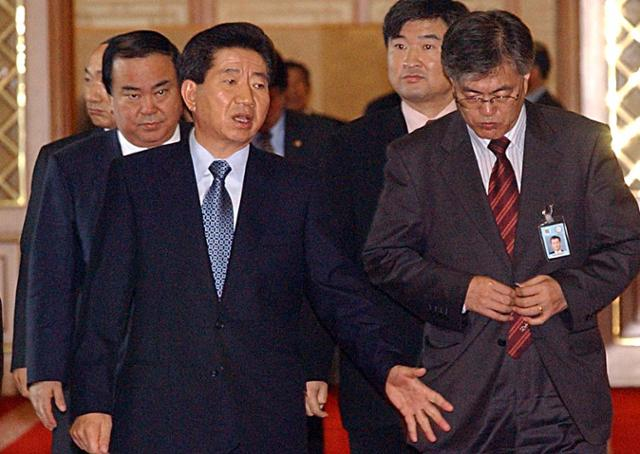
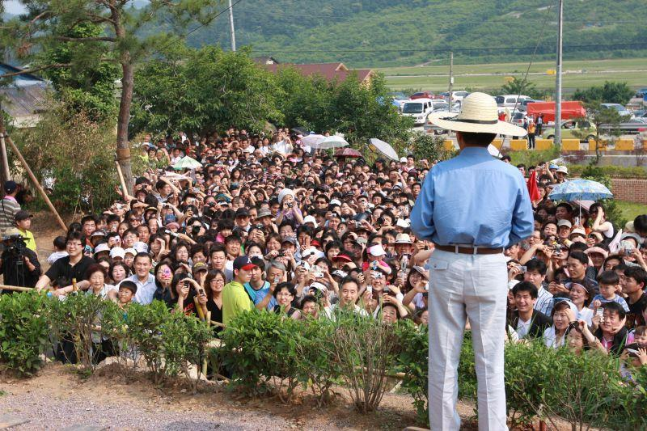
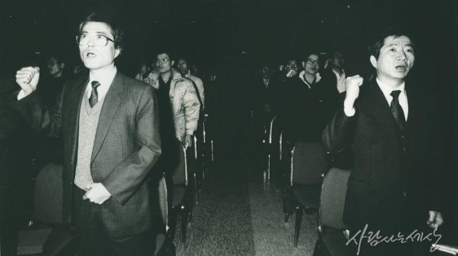
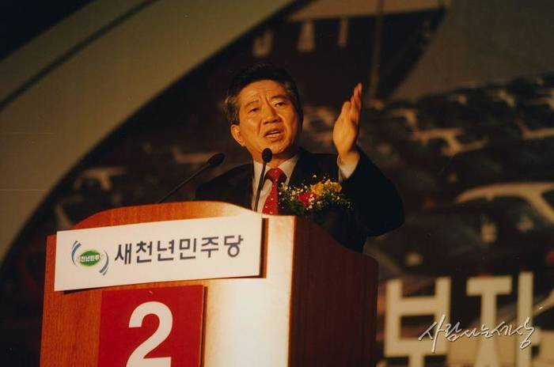
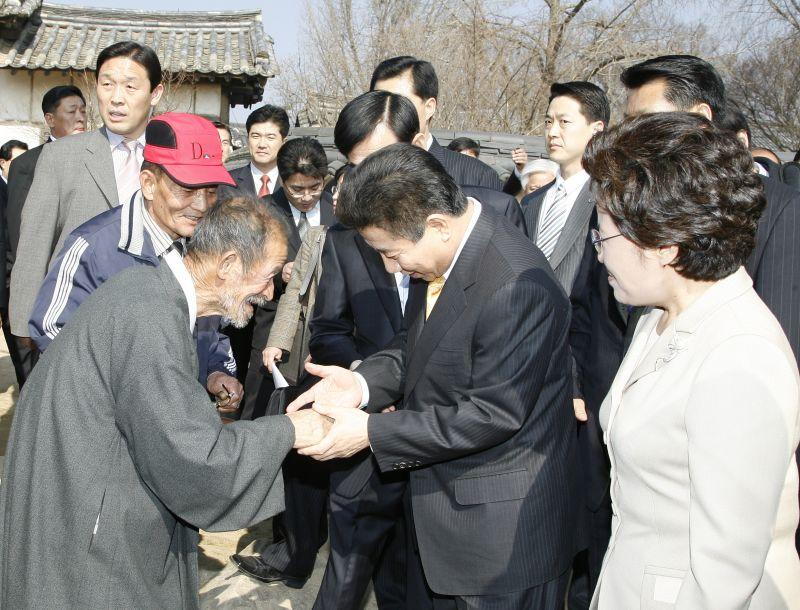
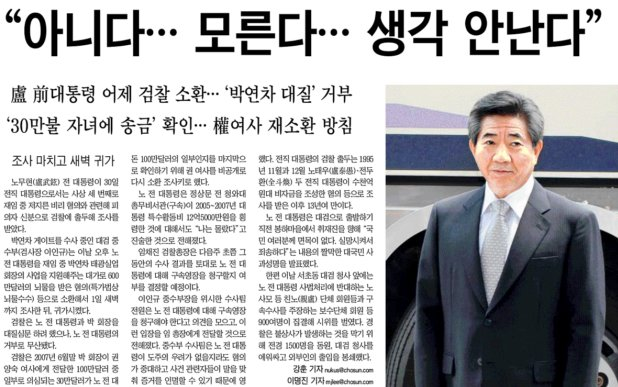

2025-12-11
나와 노무현 대통령①

노무현 대통령은 나에게 복합적인 존재였다. 내가 2020년 초반에 더불어민주당에 입당한 계기는 영화 '노무현입니다'였다. 영화에서 가장 인상 깊었던 장면은 2002년 4월 민주당 대선 후보 경선 당시 노무현 후보의 연설이었다. 인천에서 열린 경선에서 '기호 2번' 노무현 후보의 연설은 격앙된 분위기에서 이뤄졌다. 당시 이인제 후보는 노무현 후보 장인의 좌익 활동을 문제 삼으면서 노무현의 사상을 제대로 검증해야 한다고 압박했다.

당시 노무현 대통령의 연설을 살펴보자. "음모론, 색깔론, 그리고 근거 없는 모략 이제 중단해주십시오. 한나라당과 조선일보가 합작해서, 입을 맞춰서 저를 헐뜯는 것을 방어하기도 참 힘이 듭니다. 제 장인은 좌익 활동을 하다가 돌아가셨습니다. 제가 결혼하기 훨씬 전에 돌아가셨는데, 저는 이 사실을 알고 제 아내와 결혼했습니다. 그리고 아이들 잘 키우고 지금까지 서로 사랑하면서 잘 살고 있습니다. 뭐가 잘못 됐습니까? 이런 아내를 제가 버려야 합니까?” “그렇게 하면(아내를 버리면) 대통령 자격이 있고, 이 아내를 그대로 사랑하면 대통령 자격이 없다는 것입니까? 여러분, 이 자리에서 여러분께서 심판해주십시오. 여러분이 그런 아내를 가지고 있는 사람은 대통령 자격이 없다고 판단하신다면 저 대통령 후보 그만 두겠습니다. 여러분이 하라고 하면 열심히 하겠습니다.”

연설뿐만 아니다. 당시 더불어민주당은 여당으로 친문 세력이 주축을 이루고 있었다. 친문의 전신 세력은 엄연히 친노 세력이었다. 외곽 지대에서 방송을 통해 유시민을 비롯한 다양한 친노 출신 정치인들이 시사 패널로 나와서 노무현 대통령에 대한 그리움과 따뜻함에 대한 일화를 연신 보도했다. 친노의 이념은 나에게도 적절하게 어울렸다. 친노 세력의 이념은 보수와 진보의 경계를 넘나들며 사회자유주의 노선을 적극적으로 추구했다. 사회자유주의는 경제, 정치, 문화 영역에서 자유주의를 중시하면서도, 이를 보완하기 위한 사회 안전망의 구축을 강조하는 것이 핵심이다.

노무현 대통령에 대한 정치적 평가는 갈릴 수도 있지만 그의 탈권위적인 행보와 연설 실력에 대해서는 흔히 말하는 보수 계열의 정치인들도 인정할 정도다. 정치적 견해가 달랐던 홍준표 대표도 2025년 1월 13일 자신의 플랫폼인 '청년의꿈' 에서 2019년 노 전 대통령 서거 10주기를 맞아 올린 동영상에서 "대한민국 건국 이래에 비주류 서민 대통령이고, 다른 대통령들과 달리 솔직했던 분"이라고 했다.

1990년대 당시 대학가의 운동권에서 유행했던 문장에서는 "판사를 하려면 이회창처럼, 검사는 홍준표처럼, 변호사는 노무현처럼 해라"라는 말이 유행했다. 노무현 대통령은 시대의 상징이자, 위대함이었다. 노무현 대통령의 연설 중 개인적으로 좋아하는 연설이 있다. 2001년 12월 10일 〈노무현이 만난 링컨〉 출판기념회 및 후원에서 노무현 새천년민주당 상임고문의 연설이다. 많은 사람들이 기억하는 '조선 600년 연설'이라고 하는 연설이다.

“조선 건국 이래로 600년 동안 우리는 권력에 맞서서 권력을 한 번도 바꿔보지 못했다. 비록 그것이 정의라 할지라도, 비록 그것이 진리라 할지라도 권력이 싫어하는 말을 했던 사람은 또는 진리를 내세워서 권력에 저항했던 사람들은 전부 죽임을 당했다. 그 자손들까지 멸문지화를 당했다. 패가망신했다." "600년 동안 한국에서 부귀영화를 누리고자 하는 사람은 모두 권력에 줄을 서서 손바닥을 비비고 머리를 조아려야 했다. 그저 밥이나 먹고 살고 싶으면 세상에서 어떤 부정이 저질러져도, 어떤 불의가 눈앞에서 벌어지고 있어도, 강자가 부당하게 약자를 짓밟고 있어도 모른 척하고 고개 숙이고 외면했어야 됐다. 눈감고 귀를 막고 비굴한 삶을 사는 사람만이 목숨을 부지하면서 밥이라도 먹고 살 수 있던 우리 600년의 역사!" "제 어머니가 제게 남겨 주었던 제 가훈은 ‘야 이놈아 모난 돌이 정 맞는다, 계란으로 바위치기다, 바람 부는 대로 물결치는 대로 눈치 보며 살아라’, 80년대 시위하다가 감옥 간 우리의 정의롭고 혈기 넘치는 우리 젊은 아이들에게 그 어머니들이 간곡히, 간곡히 타일렀던 그들의 가훈 역시 ‘야 이놈아 계란으로 바위치기다, 그만둬라, 너는 뒤로 빠져라.’ 이 비겁한 교훈을 가르쳐야 했던 우리의 600년의 역사, 이 역사를 청산해야 한다. 권력에 맞서서 당당하게 권력을 한 번 쟁취하는 우리의 역사가 이루어져야 만이 이제 비로소 우리의 젊은이들이 떳떳하게 정의를 얘기할 수 있고 떳떳하게 불의에 맞설 수 있는 새로운 역사를 만들어낼 수 있다!”

사람들이 노무현 대통령을 좋아하는 이유가 뭘까? 그는 기득권을 내려놓았기 때문이다. 대통령 퇴임 이후 대통령과 함께 사진을 찍으려는 관광객들에게 먼저 다가가서 사진을 찍고, 재임 시절에는 국가정보원장과 국군기무사령부 장관의 단독 면담을 일체 거부하고, 불필요한 관행을 지양하고, 병사들이 친근하게 말을 걸어도 이를 꾸짓지 않았다. 호주제 폐지, 참여정부의 '양성평등 실현'을 국정과제로 선정하고 인수위 단계에서 여성 법무부 장관인 강금실을 임명하여 여성단체 및 시민사회와 연대했다.

그렇다면 노무현 대통령의 아픈 손가락은 무었이었을까? ②편에서 계속...